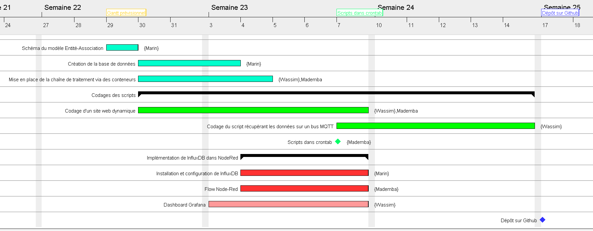
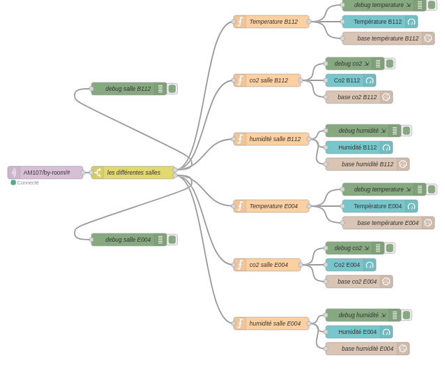
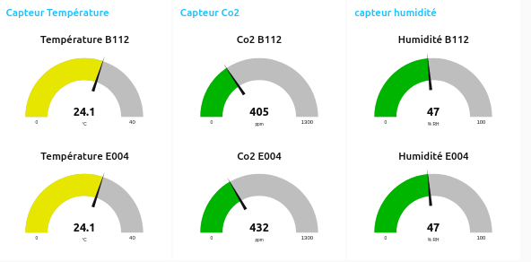
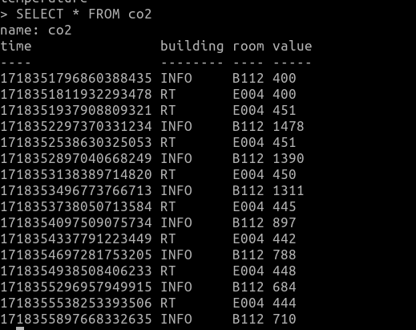
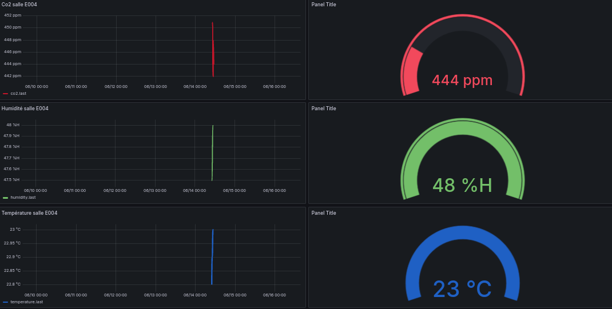

Mademba: Je me suis occupé du livrable 1, dans lesquelles j’ai effectué le gantt prévisionnelle qui était censé organiser l’attribution des tâches de chacun. Enfin, je me suis occupé de toute la partie HTML/CSS qui a pour but d’offrir une interface conviviale et graphique à la consultation des données.
Wassim: Lors de ce projet, je me suis occupé de la mise en place de la base de données sur phpmyadmin et du script permettant de remplir la base de données. J’ai également aidé mademba pour le php car il a eu quelques soucis a ce niveau là par exemple pour le tableau avec les 20 dernières mesures qu’il n’arrivait pas à faire fonctionner.
Marin: Lors de ce projet, je me suis occupé du “schéma BD” sur papier, “schéma entités associations” aussi sur papier ainsi que des dockers. J’ai aussi, en parallèle, aidé mes camarades sur leur solution, notamment avec la conception de la base de données. Puis, après avoir fini les dockers, j’ai apporté mon aide auprès de mes camarades sur la seconde solution.
Problèmes rencontrés:
Mademba:Lorsque j’ai fait le gantt prévisionnelle à ce stade du projet, il était difficile pour moi de me projeter dans les tâches, donc à la fin, je me suis aperçu que mon gantt prévisionelle n’avait pas reflété la réalité, donc j’ai fait un Gantt final. De plus, le PHP a été très dur à prendre en main pour moi, ce qui a résulté dans des erreurs du site web au point où l'on ne pouvait même plus accéder à certaines pages.
Wassim: J’ai eu un problème avec certaines données comme les unités des mesures de chaque capteur, j’ai donc associé une mesure à chaque capteur.
Marin: Les tâches qui m’ont été données ont pu être parfaitement réalisées pour la présentation orale ainsi que pour le compte rendu. Cependant, j’ai rencontré de nombreux problèmes de connexion au serveur mqtt. J'ai commencé les dockers sur une machine d’une salle à l’IUT. Cependant, lors du transfert entre la machine et mon drive, les fichiers vmdk bloquaient, j’ai donc perdu ma VM et mon travail. Ne voulant pas répéter cette erreur, j’ai refait le travail sur mon PC personnel, mais les dockers étaient bloqués par ma box. Le partage de connexion ne fonctionnait pas non plus, car mon opérateur mobile bloquait la connexion mqtt. Afin de réussir le travail, j’ai donc pris un créneau de 4h à l’iut, sur lequel j’ai refait le travail. Une fois le travail terminé, j’ai redémarré le PC afin que tout processus en rapport avec ma VM ne soit pas en cours d’exécution et j’ai transféré grâce à un disque dur externe ma VM depuis le PC de la salle vers mon PC portable.
Degré de satisfaction:
Site web dynamique:
Nous avons répondu à toutes les attentes du cahier des charges, toutes les pages demandées sont présentes, la base de données esr correctement configuré, les contraintes techniques ont été respectés, ex: Environnement : machine virtuelle. Enfin, L’accès a certaines pages du site est contrôlé.
Solution Docker:
Pour cette solution, les attentes ont, elles aussi, été respectés avec la mise en place d’une chaîne de traitement via des conteneurs. Création d’un dashboard Grafana complet.
Répartition des tâches:
Schéma Gantt

Dockers:
Voici les captures d'écran de la chaîne de docker établie.
Nodered => InfluxDB => Grafana
3 capteurs sélectionnés: humidité, température, co2
Docker n°1:Nodered
Flow Nodered

Grâce au flow Nodered nous pouvons avoir une bonne vue d'ensemble de ce qui se passe au niveau de la chaîne de dockers et l'acquisition des données mqtt. C'est lors de cette étape que nous choississons l'architecture de notre solution docker. Ici nous avons choisi de prendre toute les données du mqtt.iut-blagnac.fr puis faire la sélection des salles avec un switch. Ce dispositif permet de diminuer les demandes au mqtt. Ensuite, les fonctions vont permettre de choisir quels capteurs nous voulons sélectionner dans les salles. Puis nous avons les noeuds influxDB ainsi que le dashboard nodered qui se rajoute à la fin. C'est grâce à ce noeud influxDB que nous pouvons utiliser Grafana.
DashBoard Nodered

Le DashBoard Nodered permet de faire un premier point lors de l'installation de la solution, afin d'avoir une bonne visualisation de l'acquisition et de la répartition des données mqtt.
Docker n°2: InfluxDB
Base de données influx

Le docker influxDB nous a permis d'établir une base de données docker facilement exploitable et simple de gestion.
Docker n°2: Grafana
Dashboard

Voici les graphiques des différents capteurs. Cela représente l'évolution de leurs relevés dans le temps.
Site web dynamique:
Base de données: Schéma BD avec les clés étrangères